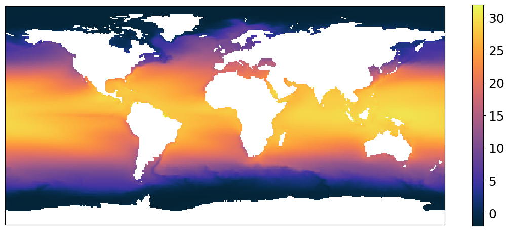
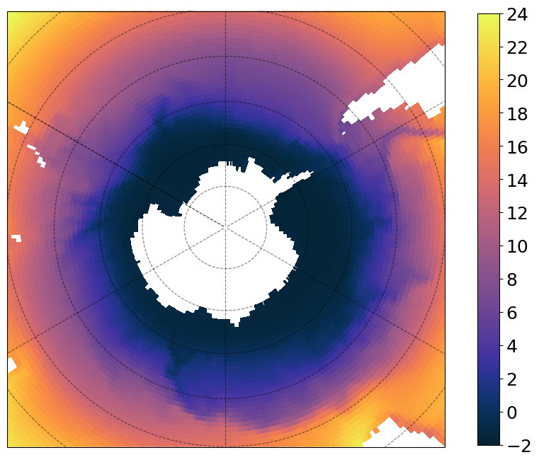

Basic Plotting with MOM6#
This notebook will take you through basic plotting of MOM6 data. We use Xarray’s plotting functionality but it is just a thin wrapper around the popular matplotlib library.
Before we get started, you may choose to run this notebook on LEAP-Pangeo hub or Binder!
This notebook is inspired by the MOM6-AnalysisCodebook docs
import xarray as xr
import cartopy.crs as ccrs
import cmocean
import matplotlib.pyplot as plt
ds = xr.open_dataset("./data/thetao_ePBL_data_timemean_1978-2002.nc")
ds
<xarray.Dataset>
Dimensions: (lat: 180, lon: 360, time: 1, z_l: 75)
Coordinates:
* lat (lat) float64 -89.5 -88.5 -87.5 -86.5 -85.5 ... 86.5 87.5 88.5 89.5
* lon (lon) float64 0.5 1.5 2.5 3.5 4.5 ... 355.5 356.5 357.5 358.5 359.5
* time (time) object 1988-01-01 09:00:00
* z_l (z_l) float64 1.0 3.0 5.0 7.0 ... 4.668e+03 5.339e+03 6.098e+03
Data variables:
thetao (time, z_l, lat, lon) float32 ...
Attributes:
title: OM4p25_JRA55do1.4_r6_cycle1_MLE1_zgrid
associated_files: areacello: 19580101.ocean_static.nc
grid_type: regular
grid_tile: N/A
code_release_version: 19.1
git_hash: c97c1f6afab0df3545ee82c337d51accc4205bc3
creationtime: Wed Dec 28 08:43:57 2022
hostname: pp206
history: Wed Oct 11 11:21:04 2023: ncks -v thetao ePBL_data...
comment: FMS time averaging, version 3.0, precision=double
NCO: netCDF Operators version 5.1.4 (Homepage = http://...Let us first plot thetao from the file
ds["thetao"].isel(time=0, z_l=0).plot(cmap=cmocean.cm.thermal, figsize=[10, 6])
<matplotlib.collections.QuadMesh at 0x7ff9f7c96190>
Now, let us use a map projection using cartopy. We will also add our own colorbar to the plot.
plt.figure(figsize=[14, 6])
subplot_kws = dict(projection=ccrs.PlateCarree(), facecolor="white")
p = (
ds["thetao"]
.isel(time=0, z_l=0)
.plot(
vmin=-2,
vmax=32,
cmap=cmocean.cm.thermal,
subplot_kws=subplot_kws,
transform=ccrs.PlateCarree(),
add_labels=False,
add_colorbar=False,
)
)
# add separate colorbar
cb = plt.colorbar(p, ticks=[0, 5, 10, 15, 20, 25, 30], shrink=0.95)
cb.ax.tick_params(labelsize=18)

You can pick any projection from the cartopy list but, whichever projection you use, you still have to set transform to ccrs.PlateCarree(). Let us use a different projection and add coastlines and gridlines to the plot.
plt.figure(figsize=[14, 6])
subplot_kws = dict(projection=ccrs.Robinson(), facecolor="white")
p = (
ds["thetao"]
.isel(time=0, z_l=0)
.plot(
vmin=-2,
vmax=32,
cmap=cmocean.cm.thermal,
subplot_kws=subplot_kws,
transform=ccrs.PlateCarree(),
add_labels=False,
add_colorbar=False,
)
)
p.axes.coastlines()
p.axes.gridlines(color="black", alpha=0.5, linestyle="--")
# add separate colorbar
cb = plt.colorbar(p, ticks=[0, 5, 10, 15, 20, 25, 30], shrink=0.95)
cb.ax.tick_params(labelsize=18)
/home/runner/miniconda3/envs/DGM2lines/lib/python3.9/site-packages/cartopy/io/__init__.py:241: DownloadWarning: Downloading: https://naturalearth.s3.amazonaws.com/110m_physical/ne_110m_coastline.zip
warnings.warn(f'Downloading: {url}', DownloadWarning)
Another projection!
subplot_kws = dict(
projection=ccrs.SouthPolarStereo(central_longitude=-120.0), facecolor="white"
)
plt.figure(figsize=[12, 8])
p = (
ds["thetao"]
.isel(time=0, z_l=0)
.plot(
vmin=-2,
vmax=24,
cmap=cmocean.cm.thermal,
subplot_kws=subplot_kws,
transform=ccrs.PlateCarree(),
add_labels=False,
add_colorbar=False,
)
)
p.axes.gridlines(color="black", alpha=0.5, linestyle="--")
p.axes.set_extent([-300, 60, -40, -90], ccrs.PlateCarree())
# add separate colorbar
cb = plt.colorbar(
p, ticks=[-2, 0, 2, 4, 6, 8, 10, 12, 14, 16, 18, 20, 22, 24], shrink=0.99
)
cb.ax.tick_params(labelsize=18)
